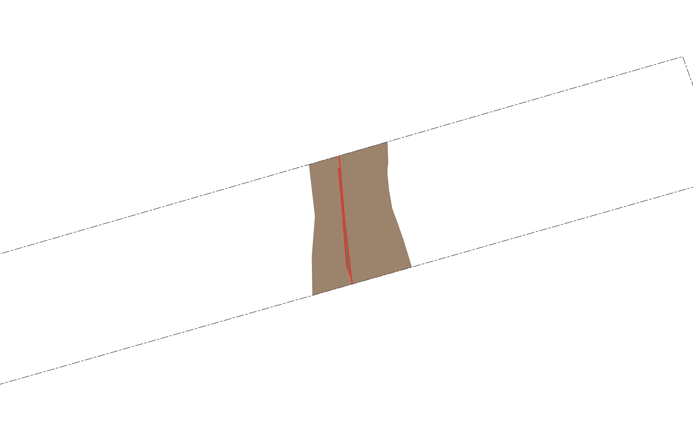
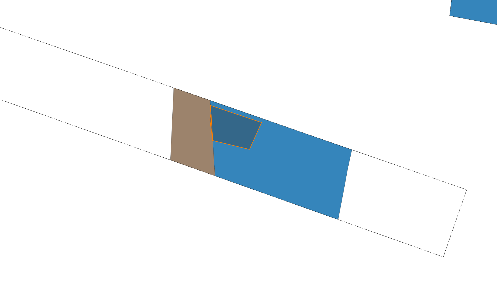
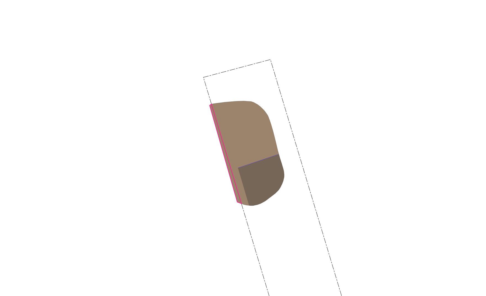
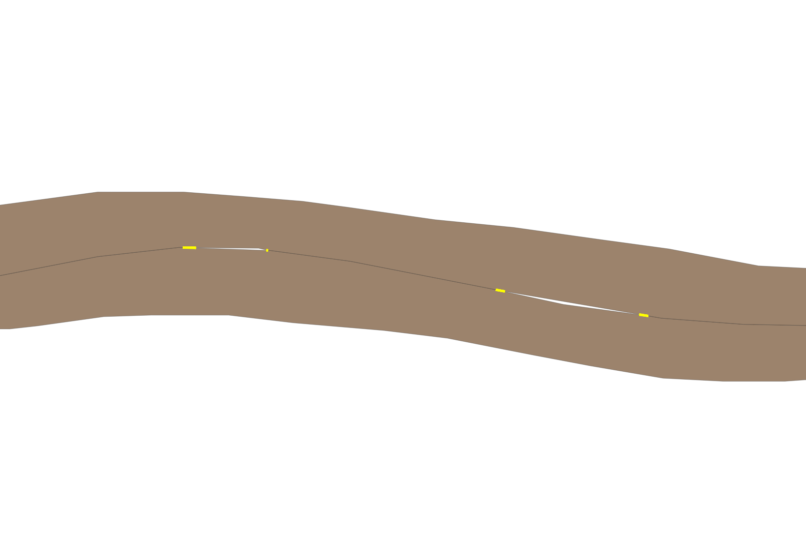

Survey Quality Control Toolkit
Simple geometry and reference checks for polygon survey data in QGIS.
What this plugin does
The Survey Quality Control Toolkit helps you find common polygon issues in QGIS. It is designed for quick visual checks of survey or digitised polygon data.
When a check finds possible issues, the plugin adds a result layer to a group called
Survey Quality Checks in the Layers panel.
Reference-based checks can now be run against multiple selected reference layers in a single check.
Basic workflow
- Load your polygon layers into QGIS.
- Open Survey Quality Control Toolkit.
- Select the main input layer.
- Select the check you want to run.
- If requested, select one or more reference layers. Reference checks now support multiple selected polygon layers.
- Click OK.
- Review the result layer in the
Survey Quality Checksgroup.
Available checks
Self Overlaps
Finds places where polygons in the same layer overlap each other. This is useful when each polygon should be separate and should not cover the same area as another polygon.
Example use: checking that intervention polygons do not overlap other intervention polygons.
Result: shows the overlapping areas between features in the selected input layer.

Multiple Reference Overlaps
Finds input polygons that overlap more than one feature across the selected reference layer or layers. It is useful when each input polygon should normally match or sit within only one reference feature, even when the reference data is split across multiple layers.
Example use: checking whether one intervention overlaps several archaeological features when it should only relate to one, including where those reference features are held in separate layers.
Result: shows the parts of input polygons that overlap multiple reference features from the selected reference layer set.

Difference Input From Reference
Compares the input layer against one or more selected reference layers and highlights parts of the input layer that are not covered by the combined reference coverage.
Example use: checking whether intervention polygons are fully covered by one or more features layers.
Result: shows any leftover areas from the input layer after all selected reference layers have been subtracted.

Linear Boundary Gaps
Finds narrow, sliver-like gaps between polygon features in the same input layer. These can happen when neighbouring polygons should share a boundary but were digitised slightly apart.
Example use: checking for thin gaps between adjacent intervention or feature polygons.
Result: shows likely narrow boundary gaps that may need to be reviewed or corrected.

Input and reference layers
The input layer is the main polygon layer you want to check.
Some checks also ask for reference layers. These are polygon layers used for comparison against the input layer.
Reference checks now allow multiple reference layers to be selected. This is useful where your reference data is split across several layers, for example separate feature, intervention, trench, or phase layers.
When more than one reference layer is selected, the plugin treats them as a combined reference set for the chosen check.
Settings
The settings dialog is organised into tabs for Outputs, Notifications, and Geometry.
Outputs
Outline width controls how thick result-layer outlines appear in QGIS. A thicker outline can make issues easier to see over your existing map layers.
Random bright colours gives each result layer a clear random outline colour. This helps distinguish results when several checks have been run.
Save output layers permanently saves result layers to a GeoPackage instead of leaving them as temporary memory layers.
The plugin uses or creates a Geopackages folder beside the saved QGIS project and writes results to
survey_quality_checks.gpkg.
Notifications
Banner duration controls how long success and warning messages stay visible at the top of the QGIS window.
Geometry tolerance
Tolerance is used by reference-layer checks to make comparisons slightly more forgiving.
It is measured in the units of the layer CRS. For example, in a metre-based CRS, 0.001 means 1 mm.
Increasing this value can help ignore tiny alignment differences, but setting it too high may hide real geometry issues.
Minimum overlap area
Controls the smallest overlap area that will be reported by overlap checks. Smaller overlaps are ignored to reduce noise from tiny slivers or digitising artefacts.
Lower this value if you want the plugin to catch very small overlaps. Raise it if the results contain too many insignificant tiny overlaps.
Minimum difference area
Controls the smallest leftover area reported by the Difference Input From Reference check. Areas smaller than this value are ignored.
Gap close distance
Controls the distance used by the Linear Boundary Gaps check to find narrow gaps between nearby polygon boundaries. A larger value can detect wider gaps, while a smaller value focuses on very narrow gaps.
Restore geometry defaults
Restores the geometry settings to the plugin's original default values. This is useful if changed values produce too many or too few results.
Understanding the results
Result layers are styled as outline-only layers so they can be viewed clearly over your existing data.
If permanent outputs are disabled, result layers are temporary. To keep a temporary result layer, right-click it in QGIS and choose Export > Save Features As....
Very small geometry pieces may be ignored by some checks to reduce noise from tiny slivers.
Troubleshooting
- No result layer appears: the check may not have found any issues.
- The wrong layer was checked: reopen the tool and confirm the selected input layer and all selected reference layers.
- Layers are missing from the dropdown: confirm they are valid polygon layers.
- Permanent saving fails: make sure the QGIS project has been saved and the project folder is writable.